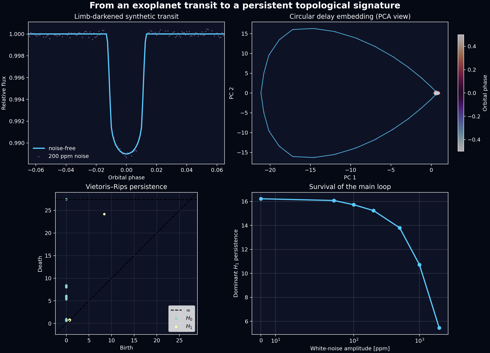

1. A transit is more than a dip
When a planet crosses the apparent disk of its host star, the observed stellar flux decreases. The depth of this decrease contains information about the planet-to-star radius ratio, while the duration, ingress, egress, curvature, and asymmetry encode a mixture of orbital geometry, stellar limb darkening, cadence, instrumental effects, and stellar activity. A transit light curve is therefore not merely a scalar depth measurement: it is a structured temporal shape.
The usual approach is to choose a physical forward model and infer its parameters. That remains the correct route when the goal is a planetary radius, impact parameter, or ephemeris. Here I explore a complementary question: can we transform the transit into a geometric object and summarize the shape of that object topologically?
The construction has three steps. First, the flux series is mapped into a delay-coordinate point cloud. Second, a Vietoris–Rips filtration turns that cloud into a sequence of simplicial complexes. Third, persistent homology records which connected components and loops survive across spatial scales. The output is not a replacement for a transit fit. It is a model-light description of morphology that may be useful for comparison, anomaly detection, quality control, or machine-learning features.
Part I develops the physical, geometric, and topological foundations. Part II builds a limb-darkened synthetic transit, adds realistic noise, computes persistent homology, and studies what survives as the noise level increases.
Part I — Mathematical and computational foundations
2. The transit as a forward problem
Let $I(x,y)$ be the specific intensity over the projected stellar disk, and let $\Omega_\star$ and $\Omega_p(t)$ denote the stellar disk and the region occulted by the planet at time $t$. Ignoring third light and taking the out-of-transit flux as the normalization, the relative flux is
$$ F(t)=1-\frac{\displaystyle\int_{\Omega_p(t)} I(x,y)\,\text{ d}A} {\displaystyle\int_{\Omega_\star} I(x,y)\,\text{ d}A}~. $$
A common quadratic limb-darkening law writes the intensity in terms of $\mu=\sqrt{1-r^2/R_\star^2}$ :
$$ \frac{I(\mu)}{I(1)} =1-u_1(1-\mu)-u_2(1-\mu)^2~. $$
If the stellar disk were uniformly bright and the planet were small, the mid-transit depth would be approximately
$$ \delta \simeq \left(\frac{R_p}{R_\star}\right)^2=k^2~. $$
The approximation is useful, but limb darkening and a non-central transit modify the
relation between depth and radius ratio. Analytic light-curve models for limb-darkened
stars were developed by
Mandel & Agol;
the computational example below evaluates such a model using
batman.
| Quantity | Main effect on the light curve | Possible geometric/topological effect |
|---|---|---|
| $k=R_p/R_\star$ | Primarily controls depth and also affects contact times. | Changes the scale and, weakly, the shape of the embedded trajectory. |
| $b$ | Controls the transit chord; high $b$ shortens the event and may produce a grazing shape. | Deforms the loop and can reduce the separation between ingress and egress branches. |
| $a/R_\star$ and $P$ | Set the orbital time scale and help determine transit duration. | Change the fraction of the delay window occupied by the event. |
| $u_1,u_2$ | Control bottom curvature and the detailed ingress/egress profile. | Produce subtler deformations of the point cloud. |
| Noise, cadence, gaps | Thicken, sparsify, or fragment the observed transit. | Create short-lived classes and may eventually destroy the dominant loop. |
3. From a scalar light curve to a point cloud
Suppose the normalized flux is sampled at times $t_i$ and written as $f_i=F(t_i)$. A single sample has no memory: it says nothing about whether the star is entering or leaving transit. Delay coordinates restore local temporal context by assigning each starting index $i$ the vector
$$ \mathbf{x}_i= \bigl(f_i,f_{i+\tau},f_{i+2\tau},\ldots,f_{i+(m-1)\tau}\bigr) \in\mathbb{R}^{m}~, $$
where $m$ is the embedding dimension and $\tau$ is a lag measured in samples. The physical window spanned by one vector is $W=(m-1)\tau\,\Delta t$ for uniform cadence $\Delta t$. As $i$ advances, the vectors trace a trajectory through $\mathbb{R}^m$. This construction is related to delay-coordinate reconstruction and to the theoretical framework introduced by Takens.
For a phase-folded transit, the samples represent one periodic orbital cycle. We can then use modular indexing, $f_{i+N}=f_i$, so that the final window wraps back to the beginning of the cycle. The embedded trajectory becomes closed. A coherent transit typically produces one dominant loop-like structure, while measurement noise thickens the trajectory and creates small local irregularities. This use of sliding windows and persistent homology follows the broader signal-analysis framework of Perea & Harer.
A single isolated transit segment is generally an open trajectory and need not contain a persistent $H_1$ class. Closing its endpoints by hand can manufacture a loop. Periodic wrapping is justified only after phase folding—or when the input truly represents a complete periodic cycle. For an isolated event, open-window geometry, path-based descriptors, or sublevel-set persistence may be more appropriate.
3.1 Choosing the lag and window length
There is no universally optimal pair $(m,\tau)$. If $\tau$ is too small, adjacent coordinates are nearly identical and the cloud collapses toward the diagonal. If it is too large, a window may mix unrelated parts of the orbit. A practical transit-specific strategy is to choose $W$ comparable to the duration of ingress plus the central event, then test a grid of nearby values.
The final result should not rest on one convenient parameter choice. A credible analysis reports a topological sensitivity surface over $(m,\tau)$, cadence, detrending settings, and phase-bin width. Features that persist only at one isolated setting are better treated as numerical artifacts than as astrophysical signatures.
4. Vietoris-Rips complexes and persistent homology
Let $X=\{\mathbf{x}_1,\ldots,\mathbf{x}_n\}$ be the embedded point cloud with Euclidean distance. At a scale $\varepsilon\geq0$, the Vietoris-Rips complex contains a simplex $[\mathbf{x}_{i_0},\ldots,\mathbf{x}_{i_q}]$ whenever every pair of its vertices is at distance at most $\varepsilon$:
$$ \operatorname{VR}_\varepsilon(X)= \left\{\sigma\subseteq X:\|\mathbf{x}-\mathbf{y}\|_2\leq\varepsilon \text{ for every }\mathbf{x},\mathbf{y}\in\sigma\right\}~. $$
Increasing $\varepsilon$ gives a filtration $\operatorname{VR}_{\varepsilon_1}(X)\subseteq \operatorname{VR}_{\varepsilon_2}(X)$ for $\varepsilon_1\leq\varepsilon_2$. Persistent homology follows topological features across this filtration:
- $H_0$: connected components, useful for diagnosing fragmentation, gaps, or separated morphological states;
- $H_1$: loops, the most natural class for a coherent periodic transit representation;
- $H_2$ and above: possible in higher-dimensional embeddings, but usually harder to estimate robustly from modest, noisy transit samples.
Each class is represented by a birth-death pair $(b_j,d_j)$, with persistence $\ell_j=d_j-b_j$. A long $H_1$ bar indicates a loop visible over a broad interval of spatial scales; points close to the diagonal in a persistence diagram have short lifetime and are more compatible with small-scale irregularity.
$$ \mathcal{D}_q(X)=\{(b_j,d_j)\}_j~, \qquad \ell_j=d_j-b_j~. $$
One simple feature vector is $\Phi(X)=(\ell^{(1)}_{H_1},\,\ell^{(2)}_{H_1},\,\sum_j\ell_{H_1,j},\, \sum_j\ell_{H_0,j})$, where the first two entries are the two longest $H_1$ lifetimes. For statistical learning, persistence images or persistence landscapes retain more of the diagram than a few hand-selected numbers.
4.1 What is—and is not—being represented?
The homology here is not the topology of the planet, the stellar surface, or the orbit in physical three-dimensional space. It is the topology of a data-derived state-space representation. Its geometry depends on the observable, preprocessing, normalization, cadence, and embedding parameters.
This distinction matters scientifically. If every window is standardized to unit variance, the representation becomes less sensitive to absolute transit depth and more sensitive to shape. That may be desirable for morphology classification, but undesirable if the planet radius is the signal of interest. Keeping raw relative flux preserves scale but makes diagrams more sensitive to calibration. The preprocessing convention must therefore follow the scientific question.
5. Interactive transit-to-topology laboratory
The panel below uses a fast, stylized quadratic-limb-darkened transit surrogate. It is
designed for intuition, not parameter inference. Change the radius ratio, impact parameter,
noise, and lag. The left panel shows one orbital cycle near transit; the right shows the
two-coordinate projection $(f_i,f_{i+\tau})$. The production example in Part II uses a
physical batman model and computes persistence in the full $m$-dimensional cloud.
Transit morphology explorer
InteractiveNotice that increasing noise does not instantly remove the large-scale loop; it first thickens the point cloud. Increasing $b$ changes the duration and can push the model toward a grazing event, visibly deforming the trajectory. Changing $\tau$ alters the projection: this is a reminder that a two-dimensional plot is only a view of the full embedding, not the topological calculation itself.
Part II — A reproducible computational experiment
6. Scientific question and synthetic system
The experiment asks a deliberately narrow question: does the dominant one-dimensional class of a phase-folded transit survive realistic photometric noise? I generate one complete orbital cycle containing a circular, limb-darkened transit, add Gaussian noise, create a circular delay embedding, and compute $H_0$ and $H_1$ persistence.
| Parameter | Value | Interpretation |
|---|---|---|
| $P$ | 3.0 d | Orbital period |
| $R_p/R_\star$ | 0.10 | Roughly a one-percent uniform-disk depth |
| $a/R_\star$ | 12.0 | Scaled semi-major axis |
| $i$ | $87.6^\circ$ | Non-central but non-grazing orbit |
| $(u_1,u_2)$ | (0.30, 0.20) | Quadratic limb darkening |
| $N$ | 1,200 | Uniform phase samples per orbit |
| Noise | 200 ppm | Independent Gaussian photometric scatter |
| Embedding | $m=25$, $\tau=2$ samples | 48-sample window span |
6.1 Dependencies
python -m pip install numpy matplotlib scikit-learn batman-package ripser persim6.2 The core pipeline
The essential implementation is short. The modular indices in
circular_embedding are the explicit periodic-boundary assumption. The complete
companion script also generates the figure and noise sweep shown below:
download the Python script.
import batman
import numpy as np
from ripser import ripser
rng = np.random.default_rng(7)
period = 3.0
n = 1_200
time = np.linspace(-period / 2, period / 2, n, endpoint=False)
# 1. Physical transit model
params = batman.TransitParams()
params.t0 = 0.0
params.per = period
params.rp = 0.10
params.a = 12.0
params.inc = 87.6
params.ecc = 0.0
params.w = 90.0
params.u = [0.30, 0.20]
params.limb_dark = "quadratic"
model = batman.TransitModel(params, time)
clean_flux = model.light_curve(params)
flux = clean_flux + rng.normal(0.0, 200e-6, n)
# 2. Standardize globally: this example emphasizes morphology over depth
z = (flux - flux.mean()) / flux.std()
# 3. Circular delay-coordinate embedding of one complete folded orbit
m, lag, stride = 25, 2, 3
starts = np.arange(0, n, stride)
offsets = lag * np.arange(m)
indices = (starts[:, None] + offsets[None, :]) % n
point_cloud = z[indices]
# 4. Vietoris--Rips persistence through dimension one
result = ripser(
point_cloud,
maxdim=1,
n_perm=min(300, len(point_cloud)),
)
h0, h1 = result["dgms"]
# 5. A compact scalar summary
dominant_h1 = np.max(h1[:, 1] - h1[:, 0]) if h1.size else 0.0
print(f"Dominant H1 persistence: {dominant_h1:.3f}")
n_perm asks Ripser.py to use a greedy permutation subsample, which reduces the
cost of a dense Vietoris–Rips computation. For a final scientific analysis, one should
verify convergence with respect to this approximation and keep the subsampling rule fixed
across objects. The package API and diagram conventions are documented by the
Ripser.py project.
7. Reading the result

- Transit panel. The noise-free curve has a limb-darkened bottom and finite ingress/egress. The noisy samples remain visually coherent at 200 ppm.
- Embedding panel. Orbital phase parametrizes a closed trajectory. The long out-of-transit baseline is compressed near one end of the projected loop; the transit supplies most of its geometric extent.
- Persistence diagram. One $H_1$ point is well separated from the diagonal. Numerous short-lived features are associated with local sampling and noise.
- Noise sweep. The dominant loop degrades continuously rather than disappearing immediately. At sufficiently large noise relative to transit depth, its lifetime collapses.
For the fixed random seed in the script, the clean and 200 ppm signals yield dominant $H_1$ persistences of approximately $16.22$ and $15.75$, respectively, after global standardization. These numbers are not universal physical constants: they depend on the metric, normalization, embedding, and subsampling. The meaningful observation is the controlled comparison under a frozen pipeline.
7.1 A stronger experiment: ensembles, not one noise realization
The single sweep is pedagogical. A publication-quality robustness study would generate many realizations at each noise amplitude, report confidence intervals for persistence summaries, and compare against null signals with matched cadence and power spectra. At minimum, I would include three null families:
- White-noise null: destroys temporal structure while matching the pointwise scatter;
- Phase-randomized surrogate: approximately preserves the power spectrum but disrupts phase relations;
- Transit-free stellar variability: tests whether rotation, pulsations, or red noise also produce persistent loops.
The quantity of interest could then be an effect size or detection probability, for example
$$ Z_{H_1}= \frac{\ell^{(1)}_{H_1,\mathrm{transit}}- \operatorname{median}(\ell^{(1)}_{H_1,\mathrm{null}})} {\operatorname{MAD}(\ell^{(1)}_{H_1,\mathrm{null}})}~. $$
Such a statistic is still not a validated exoplanet-detection score. Eclipsing binaries, rotational modulation, and instrumental systematics can also be periodic. Its role would be to add a shape-sensitive feature to a broader vetting system.
8. Moving from synthetic to Kepler or TESS data
A real-data pipeline should preserve the same conceptual order while treating preprocessing as part of the model rather than as housekeeping:
- Retrieve and audit. Obtain the light curve, quality flags, cadence, flux uncertainty, and sector/quarter provenance.
- Mask before detrending. Protect expected transits while estimating long-term variability; an aggressive filter can distort duration and depth.
- Remove flagged samples and handle gaps. Do not interpolate across large gaps without quantifying the topological effect.
- Fold on a frozen ephemeris. Record the period, reference epoch, and any transit-timing variations.
- Bin only if justified. Compare multiple phase-bin widths and propagate uncertainty.
- Embed and compute persistence. Use the same normalization, metric, lag grid, and approximation budget for every target.
- Validate with injections. Inject known transits into real out-of-transit data to measure completeness, bias, and false-positive behavior.
The lightkurve.search_lightcurve
interface can retrieve Kepler and TESS light-curve products, while
LightCurve.fold
provides phase folding. Public transit-survey holdings and system parameters are also
available through the
NASA Exoplanet Archive.
If a smoothing window is comparable to the transit duration, the procedure may alter ingress, egress, and bottom curvature—the same morphology the topological representation is supposed to summarize. Transit masks, injection–recovery tests, and preprocessing sensitivity are therefore part of the topology, not merely preliminary cleaning.
9. What could this representation be used for?
A topological representation becomes most interesting when many transits are compared under a common pipeline. Several directions seem natural:
- Morphological retrieval: find transits with similar persistence diagrams using bottleneck or Wasserstein distances;
- Quality control: flag events whose topology changes strongly across sectors, quarters, detrending methods, or phase-bin widths;
- Injection–recovery studies: map where the dominant $H_1$ class survives in depth–duration–noise space;
- False-positive vetting: combine persistence summaries with odd/even depth differences, centroid motion, stellar context, and conventional model-fit features;
- Transit timing or shape variability: compute one diagram per epoch and follow a trajectory in the space of persistence diagrams;
- Machine learning: concatenate physical parameters, conventional statistics, and vectorized persistence summaries, with train/test splits grouped by target star.
One particularly useful design is a two-branch representation. A scale-preserving branch keeps relative flux and retains depth information; a shape-normalized branch standardizes each signal and emphasizes morphology. Their persistence summaries answer different questions and should not be conflated.
10. Final perspective
Delay coordinates turn the transit from a line on a plot into a trajectory through a reconstructed state space. Persistent homology then asks a multiscale question: which aspects of that trajectory survive as the resolution changes? For a phase-folded transit, the main answer is often one dominant loop accompanied by many short-lived fluctuations.
The loop is not, by itself, evidence for a planet. Its value lies in being a stable, coordinate-light descriptor of periodic morphology. Used alongside physical transit models, uncertainty propagation, null surrogates, and injection tests, it offers a bridge between exoplanet time-series analysis and topological data analysis.
The natural next step is to leave the single synthetic system behind: inject a controlled grid of transits into real TESS noise, construct a sensitivity atlas over physical and embedding parameters, and test whether topological summaries add information beyond depth, duration, and signal-to-noise ratio.
References and software
- Mandel, K. & Agol, E. (2002). Analytic Light Curves for Planetary Transit Searches.
- Kreidberg, L. (2015). batman: BAsic Transit Model cAlculatioN in Python.
- Takens, F. (1981). Detecting Strange Attractors in Turbulence.
- Perea, J. A. & Harer, J. (2015). Sliding Windows and Persistence: An Application of Topological Methods to Signal Analysis.
- Tralie, C., Saul, N. & Bar-On, R. (2018). Ripser.py: A Lean Persistent Homology Library for Python.
- Lightkurve tutorials for Kepler and TESS light-curve access and analysis.
If you notice an error or would like to discuss an extension, feel free to send me an email.